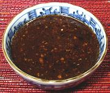

 |
Black Bean SauceChina - No Si Jeung | ||||
| Makes: Effort: Sched: DoAhead: |
6 oz ** 30 min Yes |
Black bean sauce is important in many parts of China Southeast Asia. Often it is made on the fly, but some recipes call for it ready made. It will keep for weeks refrigerated. See also our Black Bean Chili Sauce for Sichuan and Hunan recipes. | |||
|
|
2 3 ----- 1/2 2 1 1 1/2 ----- 2 |
T cl --- c T T t T --- T |
Black Beans (1) Garlic -- Flavorings Stock (2) Rice Wine Soy Sauce Sugar Cornstarch --------- Oil |
Prep - (8 min)
|